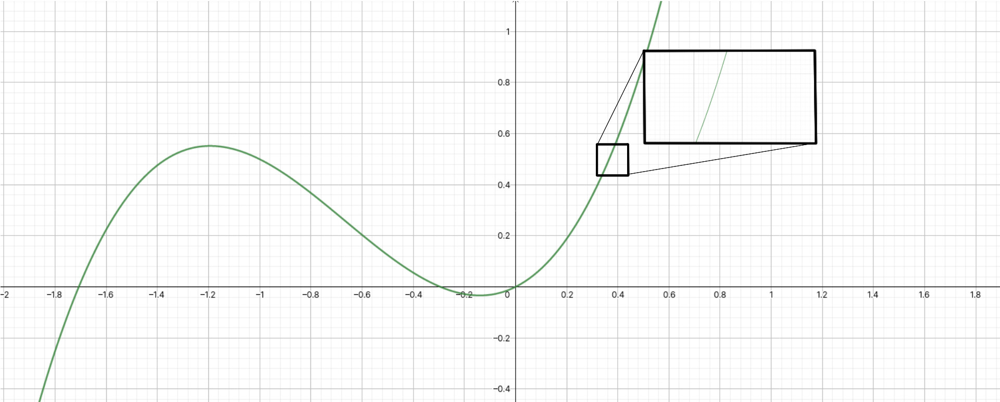
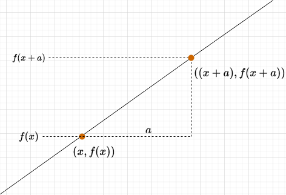

Monovariable Calculus
Contents
Monovariable Calculus#
Calculus is the most powerful weapon of thought yet devised by the wit of man.
Wallace B. Smith
Calculus is the study of continuous change: a simple set of concepts that can be applied to the most complex of systems. Nearly all of modern-day science is built on calculus, especially physics; it is quite the tool to have in your engineer’s toolbox!
Over its nearly 400-year history, calculus has evolved into perhaps the most versatile and broad field of mathematics. There is multivariable calculus, vector calculus, stochastic calculus, the calculus of variations, tensor calculus, lambda calculus…we could go on and on…
However, a lifelong journey through calculus begins with monovariable calculus (or just “calculus”). In monovariable calculus, we’re concerned with developing the fundamental ideas of calculus. These ideas will carry over to all the more advanced forms of calculus. Through them, you’re realize how calculus has such versatility and power.
Derivatives#
The equation for the slope of a line is defined as:
However, the slope equation only works for straight lines. How, then, could we find the slope of a curve?
Well, we can first take advantage of the fact that if you zoom really close in to a curve, it looks like a straight line:

Notice how, as we zoom into the curve, the curve looks more and more like a straight line, and the curvature becomes less and less noticeable.
The derivative is a function that tells you the slope of another function at any point. You can think of it as an “upgraded” version of the slope formula. We find the derivative by taking two points, \((x, f(x))\) and \(((x + a), f(x+a))\), and calculating the slope from them:

As we shrink \(a\) and make it smaller and smaller, \(a\) will approach zero, and the slope becomes:
So, for a function \(f\), the derivative \(d'(f)\) is defined as:
(Opinionated) derivative notation#
Calculus was invented at roughly the same time by two brilliant mathematicians - Gottlieb Leibniz and Isaac Newton. Unfortunately, each of them published their work at the same time with differing notations. Leibniz wrote the derivative with the notation \(\frac{df}{dx}\); Newton used the notation \(f'(x)\). Leibniz and Newton…got into a fight, which became a political controversy, and other mathematicians decided to develop other notations as well. So, sadly, there is not a unified notation around calculus.
The most common form of notation is Leibniz’s notation, where the derivative of \(f(x)\) is written like this:
Or, often, as a shorthand:
The nth-derivative is written as:
The second most common notation is Langrange’s notation, where the derivative of \(f(x)\) is written like this:
Here, the nth-derivative is written as:
The notation I came up with is intended to minimize confusion around derivatives and to clarify that a derivative is really just a specialized function. In my notation, the derivative of \(f(x)\) is written like this:
Or in the shortened notation (if the derivative is with respect to \(x\)):
If we have a function \(v(t)\), the derivative with respect to \(t\) would be written as:
A higher order derivative (e.g. second derivative) is written like this:
This is clear even if you needed to describe a very obscure derivative - e.g. the 7th derivative of the function \(d(h)\):
Differentiation#
The derivative is a very powerful function, but finding the derivative of a function unfortunately requires a bit of time and patience. This is because there is no universal formula for finding the derivative of a certain function - instead, we have general rules for finding the derivatives of a certain type of function, which we use in the process of differentiation.
Let’s start with the easiest derivative - the derivative of any constant function is zero. Why? Because the slope of any constant function is always zero, and remember, the derivative is a function that tells you the slope at every point. So if the slope at every point is zero, the derivative will always be zero.
We call this the constant rule, and we write it out like this:
Where \(n\) can be any constant. For instance:
This also means that if you have a function \(f(x) = c\), where \(c\) is a constant, then:
That should be simple enough, right?
Now, let’s do the second-easiest derivative. The derivative of the exponential function \(f(x) = e^x\) is itself. We call this the exponential rule, and we write it out like this:
The exponential rule can also be more generally written as this:
For trigonometric functions, the derivatives unfortunately have to be memorized, but you just have to memorize two of them to find the derivatives of all trigonometric functions:
And for polynomial functions, we can use the power rule:
The power rule applies to linear functions in the form \(y = mx +c\):
As well as for rational functions in the form \(f(x) = \frac{1}{x^n}\):
And nth root functions (e.g. square root, cube root, etc.) in the form \(f(x) = \sqrt[n]{x}\):
Combining the power rule and exponential rule gives us the derivatives of logarithms:
However, most functions are made from a combination of these functions. For instance, the function \(f(x) = 2x^2 + 3x + 5\) is a combination of a constant function, linear function, and power function. To find the derivatives of combinations of functions, we have a few more rules to help us.
First, we have the sum rule:
Then, the constant coefficient rule:
Then, the product rule:
From the product rule, we can derive the quotient rule:
And, most importantly, we have the chain rule. The chain rule is used for composite functions - functions that have been nested into each other. For instance, \(h(x) = \sin x^2\) is made by nesting the function \(g(x) = x^2\) inside of the function \(f(x) = \sin x\). So, we can say that \(h(x) = f(g(x))\). This is a composition of functions.
With that in mind, the chain rule is written like this:
This means we nest \(g(x)\) in the derivative of \(f(x)\) and multiply that by the derivative of \(g(x)\). The other rules here are mostly self-explanatory, but I’ll go through a worked example with the chain rule: let’s try to find the derivative of \(h(x) = \cos x^2\).
Practicing the chain rule#
We use the chain rule for composite functions, like our example, \(h(x) = \cos x^2\). We know that we can rewrite \(h(x)\) as a composite function \(f(g(x))\), where:
We can now use the two-step chain rule. In the first step, we find the derivative of \(f(x)\) and we call this \(F(x)\):
In the second step, we nest \(g(x)\) in \(F(x)\) and multiply that by the derivative of \(g(x)\):
That’s our answer!
Reciprocal derivatives#
In monovariable calculus only, derivatives follow the reciprocal rule:
Tangent to a curve#
The tangent to the function \(f(x)\) is given by the function \(t(n)\), where:
Higher-order derivatives#
Taking a derivative nth times gives you the nth derivative of a function. For example, taking the derivative of the derivative is the second derivative, the derivative of the second derivative is the third derivative, and so on. Going in the other direction, the 0th derivative is not taking the derivative at all - the same as the original function.
The second derivative is the most common higher-order derivative, and it is given by:
The order of the derivative is the number of times you take the derivative: for instance, the 7th derivative involves taking the derivative of a function 7 times! (don’t do that, please…)
Finding maxima and minima#
We can find the critical points (maxima and minima) of a function \(f(x)\) by finding its derivative and setting it to zero:
For instance, for the function \(f(x) = 2x^2 + 1\):
Then, plugging in that x value into the original f(x), we can find the y value of the maximum/minimum point:
So the minimum of \(f(x)\) is the point \((0, 1)\). How do we know if it’s a maximum or minimum though? To find out, we use the second derivative, which measures how the slope changes. If a point is a maximum, the slope will change from positive to negative around that point; if a point is a minimum, vice-versa. So:
The second derivative of \(f(x)\) is the derivative of its derivative, which we can find like this:
Since \(d_2'(f) > 0\), we know that the point \((0, 1)\) has to be a minimum.